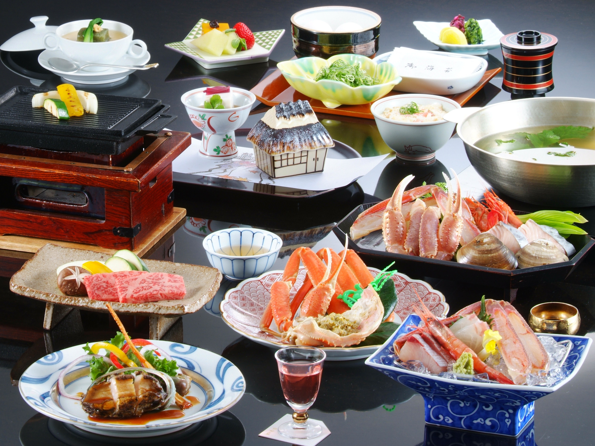

The Challenge
Rooted in Japanese hospitality, Kaiseki refers to a traditional multi-course dinner that emphasizes seasonal ingredients and artistic presentation with warm hospitality.
In a contemporary lens, the portrayal of Kaiseki may feel inaccessible to younger audiences who are curious, but unfamiliar with Kaiseki cuisine. The main challenge is to create a brand identity for Kaiyori that respects and represents the traditions of Kaiseki, while adhering to modern appeal.
The problem I need to solve: How can traditional Kaiseki be communicated in a friendly and appealing branding identity, while being suitable for contemporary audiences?
